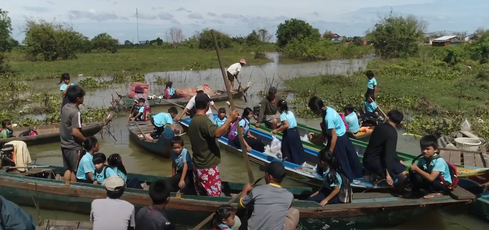
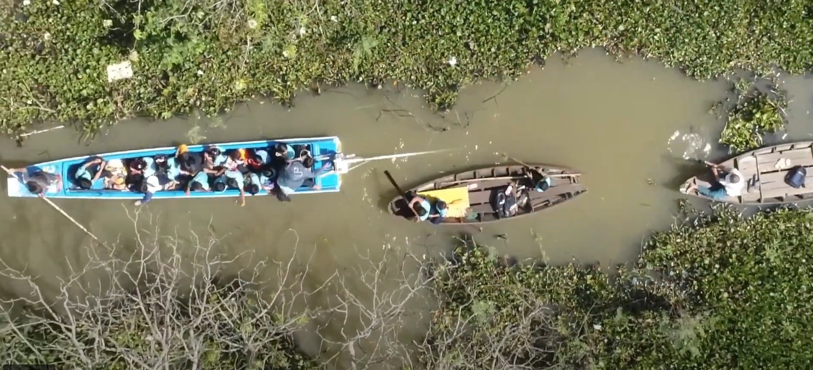
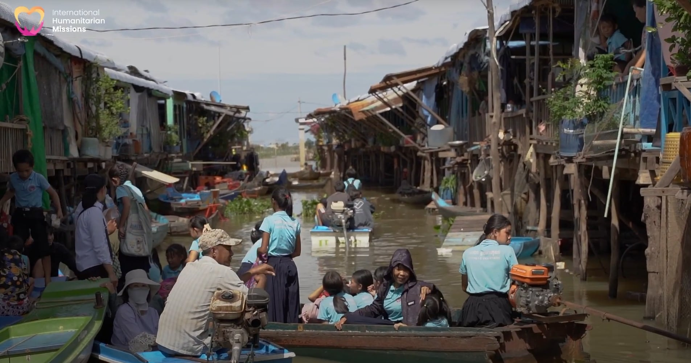
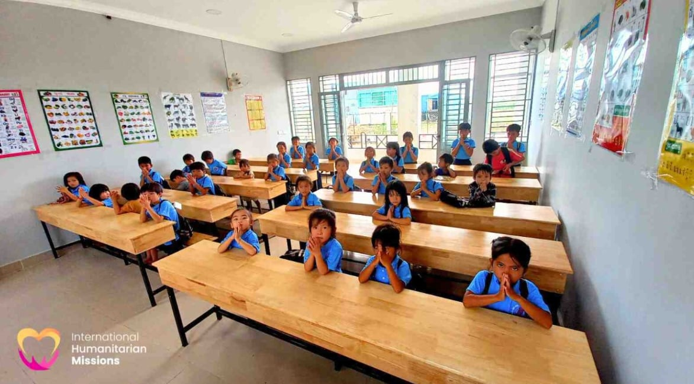
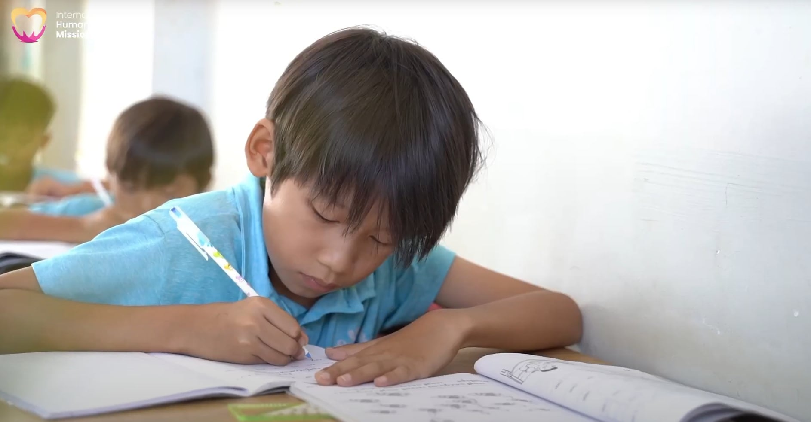
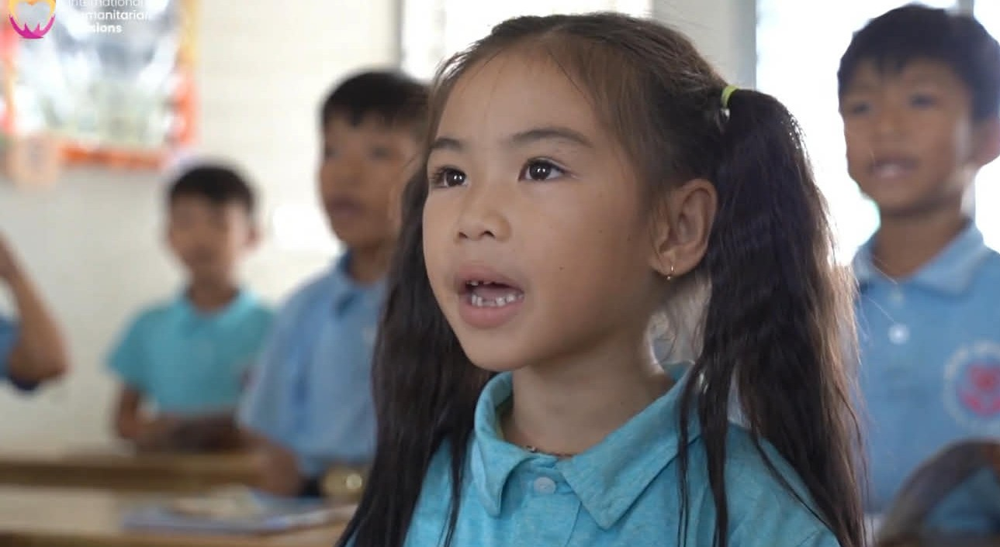
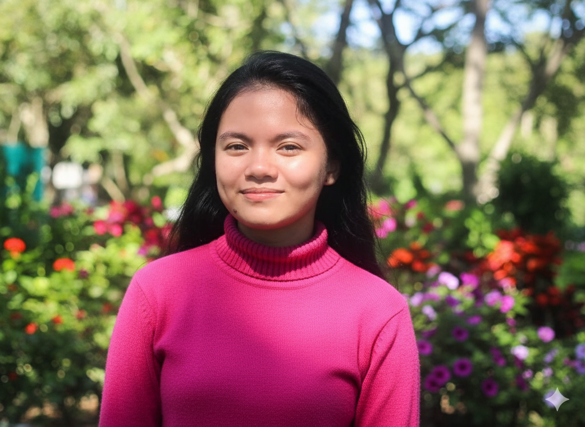
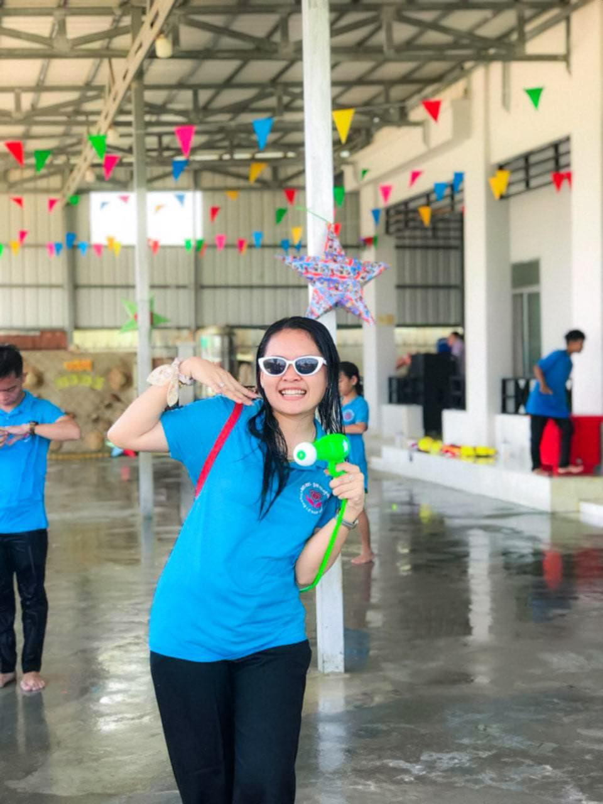
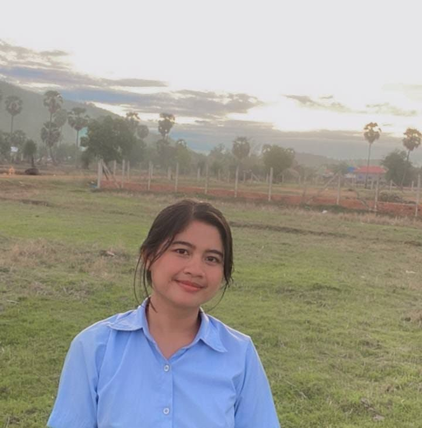

How a humanitarian mission found its way to a floating village — and why it will never leave.
Some children grow up with books, classrooms, and teachers who call them by name. But along the rivers of Tonlé Sap in Cambodia, thousands of children grow up with none of these things.
They wake up on floating villages, in homes that drift with the current, in communities where survival comes before school — and where dreams are a luxury few can afford.
International Humanitarian Missions (IHM) came to these children not with pity, but with purpose.
For years, IHM has walked alongside the forgotten children of Tonlé Sap — bringing food, shelter, care, and most importantly, education. We believed that a child who can read is a child who can rise. And so we built classrooms where there were none, trained teachers where there were none, and showed up — every single day — for children the world had left behind.
Then we took it further.
Because we knew that education alone was not enough. We knew that the world beyond the river speaks a different language — one that opens doors to opportunity, connection, and freedom. And so IHM introduced its English Lessons Program — not just teaching grammar and vocabulary, but handing these children a key.
A key to communicate with the world. A key to break the cycle of poverty that has held their families for generations. A key to say: I am here. I have a voice. I matter.
Today, children who once had no future are raising their hands in online classrooms every morning. They are learning. They are growing. And slowly, one word at a time, they are finding their way out of the dark.



Life for children in Tonlé Sap is marked by poverty, isolation, and limited opportunity. Without education, many remain trapped in a cycle where illiteracy closes doors and vulnerability grows. Teaching English is more than just language — it is a bridge to the wider world. It opens access to education, jobs, and global communication. For these children, English is a lifeline. It means they can one day speak to the world beyond the river, find opportunities outside the cycle of poverty, and protect themselves from exploitation. It gives them the power to dream bigger, to connect with people who can help, and to build futures filled with dignity and hope.
With your help, the children of Tonlé Sap can learn the words that will carry them into a brighter tomorrow. Because every child deserves the chance to be heard, to be safe, and to grow into someone who can change the world around them. Teaching English is not just about grammar or vocabulary — it is about giving these children a voice, a future, and a chance to break free.
Everything we do is rooted in these three commitments to the children and communities we serve.

Every child deserves to be seen, heard, and valued. We enter each community with respect, humility, and a deep commitment to honoring the worth of every person we serve.

We do not just believe in change. We show up and create it. Our team walks into floating villages, into difficult places, because that is where love is needed most.

For the children of Tonlé Sap, learning English is not just a lesson. It is freedom. Education is the most powerful and lasting gift we can offer any child.
IHM's English teaching program runs five days a week via live online classrooms, reaching children who live on or near the Tonlé Sap River in Cambodia.
Our volunteer teachers deliver structured, child-friendly lessons that build confidence alongside vocabulary. Every class is more than a lesson — it is an act of hope.
Mon – Fri · 8:00 – 8:50 AM (ICT)
Mon – Fri · 9:00 – 10:00 AM (ICT)
Our English teacher brings warmth, patience, and a deep love for children to every single class.

Teacher Mel is a graduate of Bachelor of Secondary Education, Major in English. Beyond the classroom, she serves as a Sunday School teacher and Youth Leader in her local church — a testament to her deep commitment to nurturing young hearts and minds.
She brings warmth, patience, and creativity to every lesson, having taught diverse Asian learners including Filipino, Chinese, Vietnamese, and Khmer students. She specializes in guiding beginner to intermediate English speakers, meeting each child exactly where they are and helping them grow with confidence.
"Teaching children is one of the greatest joys I have ever known. Every time a child understands a new word, forms their first sentence, or smiles because they finally get it — that moment is everything. I am deeply grateful to International Humanitarian Missions for entrusting me with these wonderful children. Teaching them has not only shaped their lives, but has also shaped mine. I came here to give them a voice, and they gave me a purpose."
— Teacher Mel, English Teacher, IHM
Teacher Mel is supported by two wonderful assistant teachers who help make every lesson engaging, warm, and effective.

Teacher Sreyroth is a dedicated assistant teacher who works alongside the English program at IHM. Her warm presence and patience help keep the classroom engaged, supportive, and full of energy. She plays a vital role in ensuring every child feels seen, encouraged, and ready to learn.

Teacher Ty Ty brings joy and enthusiasm to every class session. As an assistant teacher, she helps children stay focused, participates in activities, and makes sure no child is left behind. Her dedication to the children of Tonlé Sap is a true reflection of the IHM spirit.
Want to support or join the IHM teaching mission?
Visit Our Official Website